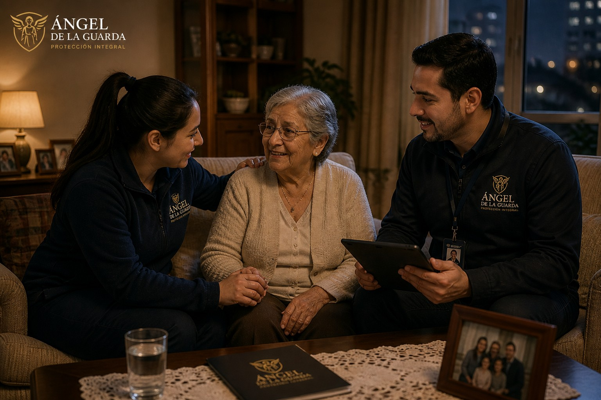
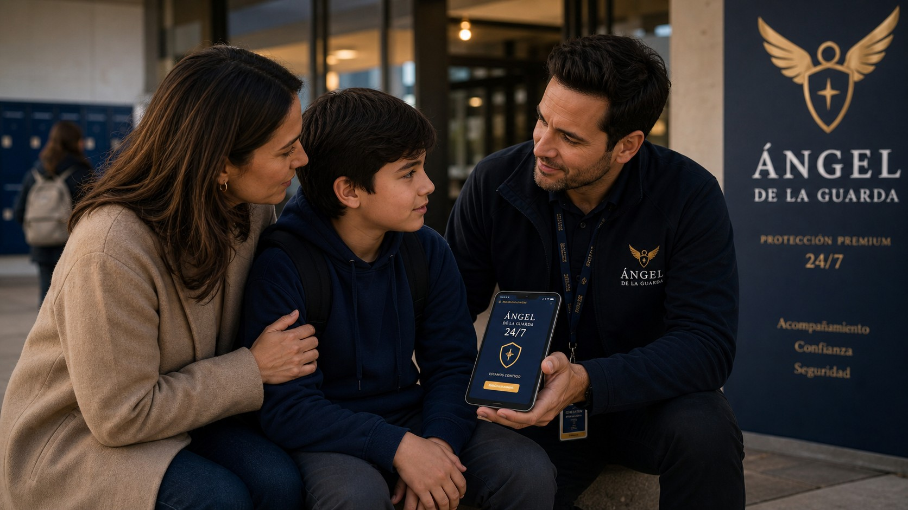

Cuando alguien queda vulnerable, aparece un ángel.
Servicio integral de protección, acompañamiento y respuesta coordinada para personas, familias, adultos mayores, propietarios y comunidades que necesitan apoyo serio, rápido y documentado.
Más amplio que seguridad privada tradicional.
La propuesta no es actuar como grupo de choque. Es prevenir, contener, acompañar, documentar y activar canales legales.
PPI: Protección Personal Integral
Evaluación de riesgo, acompañamiento preventivo, rutas seguras, verificación de entorno y protocolos para personas expuestas.
Desalojo / recuperación ante okupas
Orientación, registro de antecedentes, coordinación jurídica y acompañamiento documental. Siempre por vías legales.
Protección contra ex parejas
Acompañamiento en traslados, registro de episodios, apoyo para denuncias, coordinación con redes de confianza y medidas de resguardo.

Acompañamiento de ancianos
Visitas asistidas, acompañamiento a trámites, compras, centros médicos, revisión de entorno y aviso a familiares responsables.

Socorro antibullying 24/7
Canal de alerta para estudiantes y familias: contención inicial, registro de evidencia, orientación al apoderado, acompañamiento al colegio y derivación a redes formales.
Protocolo claro. Nada de improvisación.
Cada caso se aborda con una ruta mínima de actuación para reducir riesgo y evitar errores legales.
Diagnóstico de riesgo
Se identifica quién está en riesgo, dónde ocurre, frecuencia, antecedentes y urgencia real.
Plan de resguardo
Se definen rutas, contactos, horarios críticos, puntos seguros y responsables.
Acompañamiento y bitácora
Presencia preventiva, registro de hechos, orden de antecedentes y respaldo documental.
Derivación formal
Orientación hacia denuncia, abogado, colegio, municipio, tribunal o red familiar.
Modelos de servicio.
Estructura sugerida para vender el servicio sin prometer resultados imposibles.
Evaluación
Desde $ — por caso
- Entrevista inicial confidencial
- Mapa de riesgo básico
- Recomendaciones de acción
- Ruta legal sugerida
Protección Activa
Desde $ — mensual
- Canal de alerta prioritario
- Acompañamiento preventivo
- Bitácora de incidentes
- Coordinación con red familiar
Institucional
A medida colegios / comunidades
- Protocolo antibullying
- Charlas preventivas
- Canal de reporte
- Informes de gestión
¿Necesitas proteger a alguien ahora?
Escríbenos con una descripción breve del caso. Se responderá con una ruta de actuación segura, proporcional y dentro del marco legal.